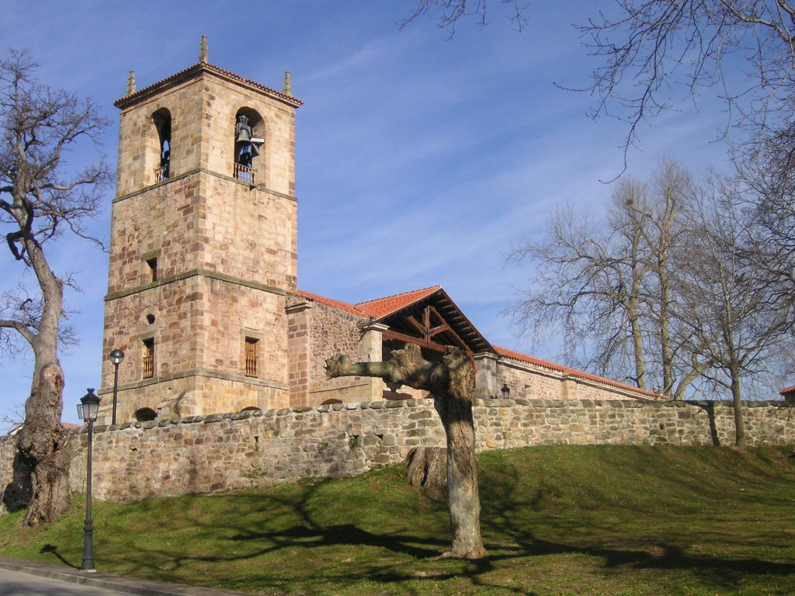

Asombrados por tal descubrimiento, y en tan especiales condiciones, los habitantes del antiguo Concejo de Vioño decidieron edificar un pequeño humilladero para rendir culto a esta imagen. A partir de ese momento comenzó un constante peregrinar de romeros y lugareños, procedentes tanto de los pueblos del valle como más alejados, que acudían con una afluencia diaria al pequeño altar erigido en honor de "La Quemada". Las escasas dimensiones del lugar de culto hizo que los vecinos del lugar decidiesen acometer la construcción de una ermita de mayores dimensiones.
Así en 1622 los maestros canteros Benito de los Palacios, Juan de Cianca y Pedro del Río construyeron la primera fase del actual santuario. Constaba de una capilla mayor, un retablo y una sacristía, y cerraba su lado occidental un remate o espadaña de tres vanos donde se alojó la campana.
Pronto esta edificación quedó también pequeña por lo que años más tarde, concretamente en 1660 se procedió a su ampliación. De la obra se encargó el arquitecto Toribio Gutiérrez de la Teja, que concluyó las obras tres años más tarde. Posteriormente el Santuario ha sufrido constantes reformas, que generaron la construcción de nuevos añadidos, entre ellos el pórtico, de gran belleza artística, en el que se halla un camarín, que albergó una imagen de piedra de Santa Ana, madre de la Virgen María.
Patrona del municipio
La imagen de la Virgen de Valencia resistió al fuego, en la fecha en que fue descubierta, y también se conservó tras la destrucción bélica de 1936 al 1939. De estilo gótico popular, perteneciente al siglo XV, aunque algunos la sitúan en siglos precedentes, está tallada en madera policromada. En su mano derecha sostenía un cetro, no conservado, y en su mano izquierda sostiene al Niño, que a su vez portaba, en sus orígenes un globo.
"La Quemada" es objeto de devoción desde sus comienzos, sobrepasando las fronteras territoriales del municipio de Piélagos. Su popularidad hacía que llegaran a venerarla devotos desde la antigua zona central de las Asturias de Santillana. Existen además documentos escritos y testamentos, de las zonas del Valle de Camargo, Toranzo o Cabezón, entre otros, en la que se cita tanto a la imagen como al santuario.
El 8 de septiembre de 1921 fue proclamada Excelsa Patrona del Real Valle de Piélagos, y desde entonces esa fecha ha constituido la cita de todos sus numerosos devotos para festejarla. Se trata de una jornada cargada de actos religiosos y festivos, que atrae año tras año a un más que nutrido grupo de peregrinos y visitantes de todos los rincones de la región. Ese día el municipio de Piélagos en pleno acude al recinto del Santuario de la Virgen de Valencia, un bello lugar situado en plena montaña, y permanece allí hasta la finalización de las celebraciones. Las agradables temperaturas que caracterizan esta fecha ayudan a que todos los asistentes disfruten de un agradable día campestre, en el que no faltan numerosos actos de entretenimiento.
El santuario de la Virgen de Valencia, y su festejo, supone el mejor ejemplo de unidad social y cultural el todo el valle de Piélagos. En esta fecha todos sus ciudadanos exhaltan y conmemoran a su patrona, y renace en sus participantes un fervor popular que se recuerda en cada cita. La festividad hace aflorar a sus habitantes un sentimiento de unión en torno a esta popular virgen.
La trascendencia de estas celebraciones ha hecho que desde la Consejería de Cultura, Deporte y Turismo del Gobierno de Cantabria se incoara un expediente de declaración de Bien de Interés Local, con la categoría de Inmueble, a favor del Santuario. Tal declaración apareció en el Boletín Oficial de Cantabria el pasado 24 de enero de 2002. En ella se recoge la importancia que tienen los caminos y la vegetación circundante "los primeros porque estructura el área inmediata del inmueble, mientras que la vegetación compuesta por arbolado, jalona esos caminos y circunda la campa del Santuario".
|
Sitios a visitar
- Vioño de Pielagos
- El picón
|